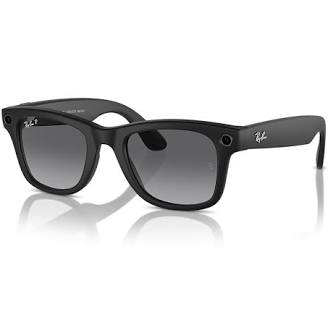
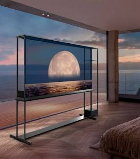
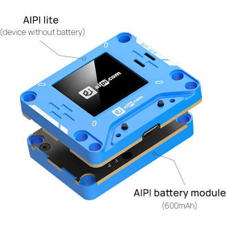
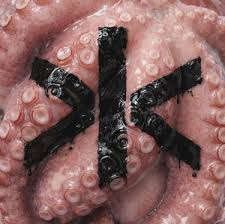
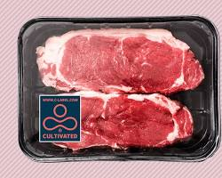
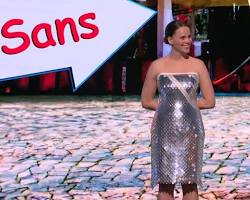
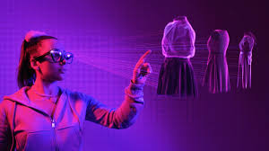
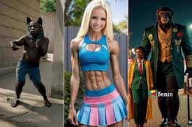
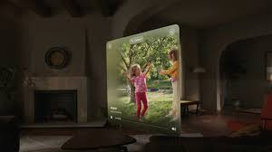
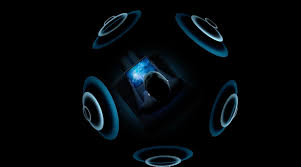

¡BIENVENIDO A ZONE!
Tu sitio favorito para vivir las tendencias.
🏃♂️
📢
NOTICIA DESTACADA
La Inteligencia Artificial revoluciona la música y videojuegos.
📱 Gadget del Año
★ VIDEO DEL DÍA ★
Top 10 de la semana
Videos virales y tendencias urbanas.
★ TENDENCIAS ★
🎮
Gaming & Tech
Comunidad e IA
🎤
Música & Moda
Streetwear
🍕
Cultura Foodie
Ruta gastronómica
⚽ ZONA DEPORTES
Bienvenido al apartado de Deportes. Aquí verás las últimas noticias del fútbol, baloncesto y más.
OKLAHOMA CITY (AP) - Victor Wembanyama y los San Antonio Spurs
comenzaron las finales de la Conferencia Oeste con una victoria en Oklahoma City
y terminaron la serie de la misma manera.
Los campeones han sido destronados. Wembanyama y los Spurs se dirigen
a las Finales de la NBA.
Wembanyama anotó 22 puntos, Julian Champagnie consiguió 18 de sus 20
mediante triples y los Spurs vencieron la noche del sábado por 111-103 al
Oklahoma City Thunder, desafiando pronósticos muy adversos para ganar un Juego 7 como visitantes.
Stephon Castle anotó 16 puntos y De'Aaron Fox aportó 15. Dylan Harper sumó 12
y Keldon Johnson y Devin Vassell terminaron con 11 cada uno para los Spurs,
que se dirigen a las Finales de la NBA por primera vez desde 2014.
Recibirán a los Knicks de Nueva York en el Juego 1 la noche del miércoles.
Shai Gilgeous-Alexander encabezó al Thunder con 35 puntos, pero por octava temporada
consecutiva la NBA tendrá un nuevo campeón.
Toluca Gana su Tercera Copa
El portero Luis García fue la figura para guiar a Toluca al título.
TOLUCA, México – La Concacaf Copa de Campeones 2026 concluyó con un empate 1-1 entre Deportivo Toluca FC
y Tigres UANL en la Final, con los Diablos Rojos imponiéndose 6-5 en la tanda de penales el sábado en el
Estadio Nemesio Díez de Toluca, México.
El guardameta de Toluca, Luis García, realizó intervenciones decisivas para los locales en la recta final
del encuentro y mantuvo el marcador sin goles. García protagonizó una doble atajada crucial al minuto 79
para detener remates de Rômulo y André-Pierre Gignac en una jugada de tiro de esquina, y posteriormente
realizó una espectacular intervención al 82’ para rechazar un balón peligroso.
Con ambos equipos igualados sin anotaciones tras los 90 minutos reglamentarios, fue necesario disputar
tiempos extra para definir al campeón.
García inició el tiempo suplementario con otra intervención clave al 94’, al detener un intento de Ángel
Correa desde el sector derecho del área.
Los Diablos Rojos rompieron el empate al minuto 104, cuando Jorge Díaz controló dentro del área un preciso
pase filtrado de Fernando Arce antes de definir al rincón inferior izquierdo.
Joaquim igualó el marcador al 114’ con un potente cabezazo dentro del área tras un tiro libre de Tigres.
Juan Brunetta aportó la asistencia.
Los dos equipos permanecieron igualados durante el resto del tiempo extra, por lo que el título tuvo
que decidirse desde el punto penal.
🔌 ZONA TECNOLOGÍA
Análisis de gadgets, software, hardware y el avance de la Inteligencia Artificial.
La tecnología actual está dominada por la consolidación de la Inteligencia Artificial (IA)
generativa y el aprendizaje automático, que han pasado de ser herramientas experimentales a
integrarse de forma nativa en aplicaciones cotidianas, el sector salud y los entornos empresariales.
Las innovaciones clave que definen el panorama tecnológico son:Inteligencia Artificial y Automatización:
Desarrollo de sistemas multiagentes y modelos de lenguaje capaces de realizar tareas complejas,
gestionar procesos de manera predictiva y apoyar la toma de decisiones.
Computación en la Nube y Edge Computing: Infraestructura fundamental que permite el procesamiento
ultrarrápido de datos y el acceso a servicios digitales desde cualquier dispositivo.
Gafas Inteligentes con Inteligencia Artificial Integrada
Los lentes inteligentes han dejado de ser solo reproductores de música para convertirse en asistentes
reales. Modelos líderes como las Ray-Ban Meta integran cámaras y sensores con IA multimodal.
Esto significa que no solo puedes tomar fotos o escuchar audio con el oído abierto, sino que los
lentes pueden "ver" lo que tú estás viendo, permitiéndote traducir menús en tiempo real, identificar
monumentos o pedir sugerencias de estilo mientras caminas por la calle.
Otras marcas de nicho enfocadas en la productividad y la protección visual, como las OhO Sunshine con
bloqueo de luz azul o las orientadas al gaming como las Razer Anzu, están popularizando el formato de
audio abierto por Bluetooth y controles táctiles discretos para el día a día.

Televisores y Pantallas OLED Transparentes
La tecnología de visualización ha alcanzado un nivel futurista con la llegada de las pantallas
transparentes de consumo. El máximo exponente de esto es la Pantalla LG OLED T de 77 pulgadas,
el primer televisor transparente inalámbrico del mundo. Cuando está encendido, muestra imágenes
vívidas gracias a su procesador Alpha 11 AI, pero al apagarse, el panel se vuelve completamente
transparente, permitiendo que el televisor se mezcle con la decoración o la pared trasera de la
habitación sin bloquear la vista, eliminando el clásico "rectángulo negro" de la sala.

Dispositivos de IA portátiles e interactivos (AI Wearables)
Más allá de los teléfonos, están naciendo dispositivos diseñados exclusivamente para albergar
personalidades y compañeros virtuales controlados por voz. Un ejemplo de esta corriente de
desarrollo abierto es el AIPI Lite, un módulo portátil diseñado para creadores y entusiastas
tecnológicos. Funciona mediante comandos de voz para interactuar con grandes modelos de lenguaje (LLM)
y permite configurar respuestas personalizadas, clonación de voz y funciones adaptativas de manera
local o conectada.

🎧 ZONA MÚSICA
Lanzamientos de álbumes, entrevistas y las playlists urbanas del momento.
OMAKASE es el tercer álbum de estudio del artista puertorriqueño Álvaro Díaz.
Fue lanzado el 22 de mayo de 2026a través de La Ciudad 3000 LLC y Universal
Music Latino.
🍣 Concepto y EstiloEl título hace referencia al término japonés Omakase
(que significa "lo dejo en tus manos").La metáfora representa a Álvaro
como un "chef" musical que sirve una experiencia arriesgada y ecléctica,
mezclando géneros como reggaetón, electrónica y cumbia. El disco está
dividido en cuatro fases creativas: forma cruda, sazonar, transformación
por fuego y sentimiento.
🎶 Tracklist y ColaboracionesEl álbum cuenta con 16 canciones, incluyendo
varias colaboraciones destacadas:
SICHEF.
MDF.
SELEDA.
BIMEL.
PIENSO EN TI.
PERDISTE EL EMMY (con Tainy).
TREINEL (con Rubí).
EN LA MISMA CIUDAD (con Jesse Baez).
KILO (con AKRIILA).
BABYRECORDS.
SPACEXXX.
MALASNOTICIAS (con LATIN MAFIA).
INAROW62.
NO PODEMOS SER AMIGOS.
OVELNAIT.
LAULTIMACENA.

CORSA es un álbum de estudio del artista urbano Eladio Carrión. Lanzado
oficialmente el 30 de abril de 2026, el disco consta de 15 canciones con
una duración total de 46 minutos.
El proyecto explora ritmos de trap y reggaetón, contando con destacadas
colaboraciones de artistas como Mora, Myke Towers y Cazzu.
Lista de Canciones:
Intro.
Ricky Bobby.
DaikokuBod.
Polaroid.
Estrella.
Impredecible (ft. Mora).
Benji.
GUWOP.
Kimchi (ft. Myke Towers).
Money En Mi MenteDe.
Chamquitx (ft. Cazzu).
Confio En Mi.
Carta Para Mis Fans.
La Vida.
En México, la canción que domina el top de popularidad es "Nalguita y Teta" de
Neton Vega, seguida de cerca porgrandes éxitos del regional mexicano como "TU
SANCHO" de Fuerza Regida.
🍔 ZONA FOODIE
Reseñas de restaurantes, recetas rápidas y rutas gastronómicas urbanas.
Carne cultivada a partir de células (sin sacrificar animales)
Ya no estamos hablando de hamburguesas hechas de soya o chícharo que imitan la carne.
Esto es carne real, pero cultivada en biorreactores a partir de células animales.
¿Cómo se hace? Se toma una pequeña muestra de células de un animal sano
(sin hacerle daño) y se "alimenta" con nutrientes en un entorno controlado para que las
células se multipliquen y formen tejido muscular real.
El avance reciente: Varias empresas han logrado reducir drásticamente los costos de
producción y la tecnología ya permite replicar cortes complejos, como filetes de pollo
o tiras de res con grasa veteada, manteniendo el mismo sabor, textura y valor
nutricional que la carne tradicional.

"Superharinas" y proteínas creadas con aire y electricidad
Suena a magia, pero es pura ingeniería biológica. Varias compañías tecnológicas de
alimentos están comercializando proteínas en polvo y harinas creadas mediante un proceso
llamado fermentación de precisión utilizando microbios, dióxido de carbono extraído del
aire, agua y electricidad.
El resultado es un polvo ultra rico en proteínas que no requiere cultivar tierras ni
gastar miles de litros de agua.
Se está usando como ingrediente base para crear desde panes con un perfil nutricional
superior hasta barras energéticas y sustitutos lácteos (como quesos e incluso helados
que se derriten exactamente igual que los de leche de vaca, pero son 100% libres de
crueldad y lactosa).
Dulces y chocolates inteligentes (que no dañan los dientes)
La biotecnología ha logrado rediseñar el azúcar a nivel molecular. En lugar de usar
edulcorantes artificiales que cambian el sabor (como el aspartamo), los científicos de
alimentos han desarrollado estructuras de azúcar modificadas.
El truco: Modifican los cristales de azúcar para que se disuelvan mucho más rápido en la
lengua. Al hacerlo, tus papilas gustativas perciben la misma intensidad de dulzor, pero
el producto utiliza hasta un 40% menos de azúcar real.
Además, se están introduciendo caramelos enriquecidos con postbióticos y enzimas activas
que protegen el esmalte dental en lugar de destruirlo, convirtiendo el postre en algo que
ayuda a tu salud bucal.
✨ ZONA MODA
Telas interactivas y pantallas usables (Ropa que cambia de diseño)
La ropa está dejando de tener un solo color o patrón. Gracias al desarrollo
de textiles inteligentes con pantallas de cristal líquido flexibles y polímeros
reflectantes, grandes firmas de tecnología y diseño han creado prendas capaces
de cambiar su aspecto en un segundo. El ejemplo más famoso es el Project
Primrose, un vestido interactivo que utiliza módulos similares a los de la tinta
electrónica para cambiar de color, crear patrones en movimiento e incluso
reaccionar a los gestos de quien lo lleva puesto.

Biomateriales y cuero cultivado de hongos (Micelio)
Para combatir el impacto ambiental de la moda rápida (fast fashion), la ciencia de
materiales está cultivando alternativas textiles idénticas al cuero pero sin origen
animal ni plásticos derivados del petróleo. La mayor tendencia es el uso de micelio
(la estructura de raíces de los hongos). En laboratorios especializados, el
micelio se alimenta de residuos agrícolas y crece en cuestión de días, formando una
textura suave, ultrarresistente y completamente biodegradable que marcas de lujo ya
usan para hacer chaquetas, tenis y bolsos de alta costura.
Moda puramente digital y Realidad Aumentada (Ropa para el entorno virtual)
Con el auge de las redes sociales y las plataformas virtuales, ha nacido el concepto
de la ropa que no existe en el mundo físico. Los diseñadores crean colecciones en 3D
que los usuarios compran para "usar" exclusivamente a través de la cámara de su
smartphone usando filtros de Realidad Aumentada (AR). La prenda se adapta al cuerpo
en tiempo real con físicas perfectas para fotos o videos, permitiendo estrenar
atuendos futuristas y complejos sin generar residuos textiles reales.

📺 ZONA MULTIMEDIA
Disfruta de nuestros podcasts, directos y videos exclusivos.
Video generativo de calidad cinematográfica (Texto a Video)
La evolución de la inteligencia artificial para crear video ha dado un salto colosal.
Herramientas avanzadas como OpenAI Sora y Runway Gen-3 permiten generar escenas de video
hiperrealistas, animaciones estilizadas y tomas cinematográficas complejas con solo
escribir una descripción de texto. Lo revolucionario es que estas IA ahora comprenden las
leyes de la física, la consistencia de los personajes en múltiples tomas y los movimientos
de cámara fluidos, reduciendo los tiempos de preproducción y permitiendo a creadores
independientes generar metraje de calidad profesional en minutos.

Video espacial y contenidos para Computación Espacial
Con la llegada y maduración de visores avanzados como el Apple Vision Pro, el contenido
grabado tradicional en dos dimensiones está dando paso al video espacial. Este formato
captura video en tres dimensiones con una profundidad real. Cuando un usuario reproduce
un video espacial, no está viendo una pantalla plana; los elementos y las personas tienen
volumen y escala real, permitiendo revivir momentos o consumir contenido de entretenimiento
como si estuvieras físicamente parado en el lugar donde se grabó la escena.

Audio Espacial Dinámico y Mezclas Binaurales Inteligentes
El audio ha dejado de ser simplemente estéreo (izquierdo y derecho) para volverse completamente
tridimensional a través de algoritmos de audio espacial con seguimiento de cabeza. Al usar
auriculares modernos, el sonido se renderiza simulando un espacio físico real. Si estás viendo
un concierto y giras la cabeza a la izquierda, la voz del cantante se moverá hacia tu oído
derecho en tiempo real. Plataformas de streaming musical y de video están mezclando por
defecto en formatos envolventes avanzados para recrear salas de cine o estudios de grabación
directo en tus oídos.

📩 CONTACTO
¿Quieres colaborar con ZONE? Escríbenos a contacto@zone.com